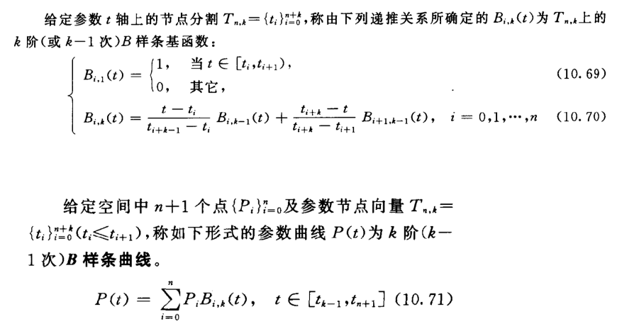

Project1 实验报告
邹怡 21307130422
吴皓玥 21307110386
一.曲线的绘制
1. 三次贝塞尔曲线
实验要求：
主要要求完成curve.cpp中的evalBezier函数，需要求出曲线中每个点的坐标，以及对应点的法向量N、切向量T和次法线向量B
实验原理：
（1）对于三次贝塞尔曲线，需要对给出的四个点和steps，曲线可以由四个点和一个与t有关的函数加权相乘并相加求得，三次贝塞尔曲线公式如下：
其中t∈[0,1],t的增量.
（2）对于每个点的局部坐标系，可以由函数生成，具体公式如下：
但是对于第一个点的需要进行特殊初始化，可以选择(0,0,1)进行初始化
（3）对于上面公式，可展开变换，并通过矩阵相乘方便代码编写，具体公式如下：

代码解读
- 在具体的函数中，传入一个点集和一个unsigned参数steps作为每一组(4个点)所需要计算的次数。将点集分为P_size/3组，因为点集由3n+1个点组成，故可以分成每组4个组间收尾相连的segments个组
- 每一组点的计算中，t从0开始，每次增加，计算出每个点的坐标，并根据公式计算出局部坐标系B,T,N。直接调用矩阵的对应函数和矩阵乘法，注意向量不能直接进行相乘，而是要调用Vector3f的对应cross函数
- 对于第一个点进行初始化处理，第一个点为P1，切向量T为t=0代入P’(t)，得到3*(P2-P1),B0取(0,0,1)，后续循环每一段计算steps个点即可。
- 使用curves对CurvePoint进行存储，在计算出每个CurvePoint的对应信息后将其push进curves最后返回
Curve evalBezier(const vector< Vector3f >& P, unsigned steps)
{
// Check
if (P.size() < 4 || P.size() % 3 != 1)
{
cerr << "evalBezier must be called with 3n+1 control points." << endl;
exit(0);
}
int P_size = P.size();
int segments = P_size/3;
float t,delta;
delta = 1.0/steps;
t = 0;
Curve curves;
Matrix4f M_bez={1,-3,3,-1,
0,3,-6,3,
0,0,3,-3,
0,0,0,1};
Vector3f B0={0,0,1};
Vector4f MT;
Vector4f MT_dao;
for(int i=0;i<segments;i++)
{
t = 0;
Vector3f P1,P2,P3,P4;
P1 = P[i*3];
P2 = P[i*3+1];
P3 = P[i*3+2];
P4 = P[i*3+3];
if(i == 0)
{
CurvePoint C;
C.V = P1;
C.T =(3* (P2-P1)).normalized();
C.N = Vector3f::cross(B0,C.T).normalized();
C.B = Vector3f::cross(C.T,C.N).normalized();
curves.push_back(C);
}
for(unsigned j=0;j<steps;j++)
{
t+=delta;
CurvePoint NewC;
Vector4f T(1,t,t*t,t*t*t);
Vector4f T_dao(0,1,2*t,3*t*t);
MT=M_bez*T;
MT_dao=M_bez*T_dao;
NewC.V = P1*MT.x()+P2*MT.y()+P3*MT.z()+P4*MT.w();
NewC.T = (P1*MT_dao.x()+P2*MT_dao.y()+P3*MT_dao.z()+P4*MT_dao.w()).normalized();
NewC.N = Vector3f::cross(curves.back().B,NewC.T).normalized();
NewC.B = Vector3f::cross(NewC.T,NewC.N).normalized();
curves.push_back(NewC);
}
}
cerr << "\t>>> evalBezier has been called with the following input:" << endl;
cerr << "\t>>> Control points (type vector< Vector3f >): " << endl;
for (int i = 0; i < (int)P.size(); ++i)
{
cerr << "\t>>> " << P[i] << endl;
}
cerr << "\t>>> Steps (type steps): " << steps << endl;
cerr << "\t>>> Returning empty curve." << endl;
return curves;
}
2. B样条曲线
实验要求
要求完成curve.cpp中的evalBspline函数，画出B样条曲线，需要通过变换点集，调用evalBezier函数求解出每个点的坐标和局部坐标系
实验原理
（1）B样条曲线与Bezier曲线相比，有更高的稳定性，并且可以通过变换点集转换成Bezier曲线的求解，控制点分组同样4个点一组，但是步长为1
（2）B样条曲线不要求点的个数为3n+1，对于三次（k=4）B样条曲线，根据下面的递推公式

可以求得k=4的系数分段表达式为

（3）为了方便编码，将上面的系数转化为矩阵计算，得到B样条曲线矩阵公式

（4）将B样条曲线中令s=t-j可以得到类似⻉塞尔曲线的形式，我们只需要对B样条曲线中每⼀段的控制点乘上,然后按⻉塞尔曲线⽣成即可。故evalBspline函数中主要实现的功能为将原始点集转换为

代码解读
- 根据点集矩阵变换公式，先得到,用于后续进行点集变换。
- 对原始点集进行分组，4个一组，步长为1，进行变换，初始一个点单独变换并push进新点集中，后续则三个一起push。
- 为了方便计算，将拓展为4*4的矩阵，并在之后通过getCol(0).xyz()函数获取实际变换后的三维坐标
- 最后调用evalBezier函数，将变换后的点集传入求解
Curve evalBspline(const vector< Vector3f >& P, unsigned steps)
{
// Check
if (P.size() < 4)
{
cerr << "evalBspline must be called with 4 or more control points." << endl;
exit(0);
}
int P_size=P.size();
Matrix4f M_B(1.0/6, -1.0/2, 1.0/2, -1.0/6,
2.0/3, 0, -1.0, 1.0/2,
1.0/6, 1.0/2, 1.0/2, -1.0/2,
0, 0, 0, 1.0/6);
Matrix4f M_bez={1,-3,3,-1,
0,3,-6,3,
0,0,3,-3,
0,0,0,1};
Matrix4f Multi=M_B*(M_bez.inverse());
vector<Vector3f> P_trans;
for(int i=3;i<P_size;i++)
{
Matrix4f temp(Vector4f(P[i-3],0),
Vector4f(P[i-2],0),
Vector4f(P[i-1],0),
Vector4f(P[i],0)); //构造4*4矩阵，方便相乘
Matrix4f P_trans_raw=temp*Multi; //得到新的点，但是w轴多余，只取xyz
if(i==3)
{
P_trans.push_back(P_trans_raw.getCol(0).xyz());
}
P_trans.push_back(P_trans_raw.getCol(1).xyz());
P_trans.push_back(P_trans_raw.getCol(2).xyz());
P_trans.push_back(P_trans_raw.getCol(3).xyz());
}
vector<CurvePoint> curves=evalBezier(P_trans,steps);
cerr << "\t>>> evalBSpline has been called with the following input:" << endl;
cerr << "\t>>> Control points (type vector< Vector3f >): " << endl;
for (int i = 0; i < (int)P.size(); ++i)
{
cerr << "\t>>> " << P[i] << endl;
}
cerr << "\t>>> Steps (type steps): " << steps << endl;
cerr << "\t>>> Returning empty curve." << endl;
return curves;
}
3. 实验结果
- core.swp

- flircle.swp

- florus.swp

- gentorus.swp

- norm.swp

- tor.swp

- weird.swp
- weirder.swp
- wineglass.swp

二、曲面的绘制
1.旋转曲面
实验要求
完成surf.cpp中的makeSurfRev函数，正确地计算曲面法线，实现两种显示模式，一种显示以线框模式绘制的曲面，并将顶点法线从曲面向外绘制，另一种使用平滑的阴影来显示表面。
实验原理
（1）旋转曲面是将xy平面上的轮廓曲线绕y轴旋转形成的曲面，通过旋转变换计算出曲线上各控制点旋转一定角度后对应的坐标。
绕y轴的旋转变换矩阵为
控制点坐标为
（2）可以通过获得法线，为了使OpenGL执行适当的照明计算，法线需要从表面射出，在这个任务下，要反转曲线法线的方向得到正确的曲面法线，即。
（3）最后，在相邻曲线之间构造三角形来形成曲面。如下图，对于相邻两条曲线的四个顶点A、B、C、D，构成ACB和BCD两个三角形。注意，因为曲线是逆时针旋转，为了显示出正确的照明结果，三角形也要按照逆时针的顺序生成。

代码解读
- 根据step决定每次旋转的角度，直接调用
Matrix4f::rotateY函数得到不同角度对应的旋转矩阵M，并通过计算逆矩阵转置得到后续需要使用的矩阵M_inverse_T。 - 遍历曲线
profile上的点，使用前一步的选择矩阵将旋转变换过的点的坐标和点的法向量分别加入到曲面顶点和法向量的数组中。 - 当前曲线和下一条曲线上的顶点构成三角形面片来形成曲面，根据前面的实验原理使用
Tup3u函数将三角形的顶点索引加入到曲面的面数组中。同时，为了让最后一条曲线和第一条曲线构成面，加入了unsigned temp = (i+1)%(steps)。这里还需要考虑到轮廓曲线不一定是闭合曲线，不需要将首尾连接起来，在遍历轮廓曲线控制点到lenth-2下标就可以停止了。
const double pi = 3.14159265358979323846;
Surface makeSurfRev(const Curve &profile, unsigned steps)
{
Surface surface;
//surface = quad();
unsigned lenth = profile.size();
if (!checkFlat(profile))
{
cerr << "surfRev profile curve must be flat on xy plane." << endl;
exit(0);
}
// TODO: Here you should build the surface. See surf.h for details.
// 旋转曲面
for(unsigned i = 0; i < steps; i++){
double theta = 2*pi/steps*i;
Matrix4f M = Matrix4f::rotateY(theta);
Matrix4f M_inverse_T = M.inverse().transposed();
for(unsigned j = 0; j <lenth; j++){
Vector4f P = Vector4f(profile[j].V, 1);
Vector4f N = Vector4f(profile[j].N, 1);
surface.VV.push_back((M*P).xyz());
surface.VN.push_back((-(M_inverse_T*N).normalized()).xyz());
}
for(unsigned k = 0; k<lenth-1; k++){
// 构成三角形
unsigned temp = (i+1)%(steps);
surface.VF.push_back(Tup3u(i*lenth+k, i*lenth+k+1, temp*lenth+k));
surface.VF.push_back(Tup3u(i*lenth+k+1, temp*lenth+k+1, temp*lenth+k));
}
}
cerr << "\t>>> makeSurfRev called (but not implemented).\n\t>>> Returning empty surface." << endl;
return surface;
}
2.广义圆柱面
实验要求
完成surf.cpp中的makeGenCyl函数，正确地计算曲面法线，实现两种显示模式，一种显示以线框模式绘制的曲面，并将顶点法线从曲面向外绘制，另一种使用平滑的阴影来显示表面。
实验原理
（1）广义圆柱体是通过沿着一个曲线轮廓（profile）进行扫掠（sweep）而生成的，轮廓曲线沿着三维扫描曲线的路径，获得一个三维形状。扫描曲线上的任意一个点对应一个坐标系， 我们需要将轮廓曲线变换到这个坐标系上，变换矩阵为
控制点坐标为P = M*P
（2）曲面法线同旋转曲面，也要对结果取负得到正确的结果：
（3）按照和旋转曲面一样的方法构造三角形
代码解读
- 遍历扫描曲线（sweep）上的每一点，计算出每一点对应的变换矩阵。
- 遍历轮廓曲线（profile）上的每一点，计算出该点进行变换后对应的坐标和法向量，加入到曲面的顶点和法向量数组中。
- 构造三角形面片，加入到曲面的面数组中。
Surface makeGenCyl(const Curve &profile, const Curve &sweep )
{
Surface surface;
//surface = quad();
if (!checkFlat(profile))
{
cerr << "genCyl profile curve must be flat on xy plane." << endl;
exit(0);
}
unsigned lenth = profile.size();
unsigned steps = sweep.size();
for(unsigned i = 0; i < steps; i++){
Vector4f N = Vector4f(sweep[i].N, 0);
Vector4f B = Vector4f(sweep[i].B, 0);
Vector4f T = Vector4f(sweep[i].T, 0);
Vector4f V = Vector4f(sweep[i].V, 1);
Matrix4f M = Matrix4f(N, B, T, V, true);
Matrix4f M_inverse_T = M.inverse().transposed();
for(unsigned j = 0; j < lenth; j++){
Vector4f P = Vector4f(profile[j].V, 1);
Vector4f N = Vector4f(profile[j].N, 1);
surface.VV.push_back((M*P).xyz());
surface.VN.push_back((-(M_inverse_T*N).normalized()).xyz());
}
for(unsigned k = 0; k<lenth-1; k++){
// 构成三角形
unsigned temp = (i+1)%(steps);
surface.VF.push_back(Tup3u(i*lenth+k, i*lenth+k+1, temp*lenth+k));
surface.VF.push_back(Tup3u(i*lenth+k+1, temp*lenth+k+1, temp*lenth+k));
}
}
cerr << "\t>>> makeGenCyl called (but not implemented).\n\t>>> Returning empty surface." <<endl;
return surface;
}
3.实验结果
flircle.swp
florus.swp gentorus.swp norm.swp tor.swp weird.swp weirder.swp winglass.swp


三、曲面的闭合问题
实验要求
通过以上方法计算坐标系会存在闭合曲线在曲线相交的地方不一定对齐，因为生成的扫掠曲线来自B样条曲线的生成，如下图所示，在曲线首尾连接处，B、N两个向量不一致。

通过添加代码来解决这个问题，显示一个无缝的weirder.swp。
实验原理
(1)可以得到曲线起始法向量与结束法向量的夹⻆，如果直接在起点和终点发生改变，有可能发生很大的错位，于是考虑制造一个渐变的过程，法向量在曲线闭合的两端缓慢地从起点过渡到终点向量。
(2)通过插值旋转来实现。
四元数的插值的定义为：假设有两个旋转变换 和 ，我们希望找出中间变换 ，使得初始变换 能平滑的过渡到最终变换 ， 时 ， 时 。
这里采用Slerp插值法，对于两个单位四元数 和 ，它们之间的插值可以表示为：
其中， 是 到 之间的夹角， 是插值参数，。
插值过程如下：
- 首先，计算两个四元数之间的夹角 。
- 根据插值参数 计算插值系数。
- 根据插值系数计算插值结果。
代码解读
- 首先，要写一个检查函数来判断起点和终点是否位置和切线相同，并且法线不同。因为三维向量中的值是float，使用原来的
==无法正确判断向量是否相等，于是我们修改了Vector3f.cpp中的==函数，只要两个向量对应位置的差值小于1.0e-6，我们就认为两个向量是相等的。 - 当
checkFlat(profile)==false时，表示起点和终点的法线不同，要进行旋转。 - 计算出起始点和终点法向量之间的夹角的负值。
- 通过
P1.setAxisAngle(theta, sweep[0].T)计算旋转的四元数P1 - 通过循环进行插值旋转。使用插值参数
t和增量delta进行插值。在每个循环中，通过四元数Slerp插值法计算在起始点和终点之间的旋转四元数。通过将每个曲线点的法向量、切向量和边界向量与插值得到的旋转四元数相乘，实现插值旋转,将旋转后的曲线点添加到sweep_trans曲线中。
// 修改了Vector3f.cpp的==
bool operator == ( const Vector3f& v0, const Vector3f& v1 )
{
return( fabs(v0.x() - v1.x())<=eps && fabs(v0.y() -v1.y())<=eps && fabs(v0.z() - v1.z())<=eps );
}
// 检查函数
bool CheckWeird(const Curve& sweep)
{
unsigned sweep_size=sweep.size();
double const eps=1.0e-6;
if((sweep[0].T == sweep[sweep_size-1].T) && (sweep[0].V==sweep[sweep_size-1].V)
&& (sweep[0].N != sweep[sweep_size-1].N))
return false;//不闭合返回false
return true;
}
Surface makeGenCyl(const Curve &profile, const Curve &sweep )
{
Surface surface;
//surface = quad();
if (!checkFlat(profile))
{
cerr << "genCyl profile curve must be flat on xy plane." << endl;
exit(0);
}
unsigned lenth = profile.size();
unsigned steps = sweep.size();
//插值旋转
Quat4f P0=Quat4f::IDENTITY;
Quat4f P1=Quat4f::IDENTITY;
if(!CheckWeird(sweep))
{
float theta = -acos(Vector3f::dot(sweep[0].N,sweep[steps-1].N));
P1.setAxisAngle(theta,sweep[0].T);
}
Curve sweep_trans;
float t=0,delta=1.0/steps;
for(unsigned i=0;i<steps;i++)
{
CurvePoint point;
Quat4f Slerp = Quat4f::slerp(P0,P1,t).normalized();
point.V = sweep[i].V;
point.N = (Slerp*Quat4f(sweep[i].N)*Slerp.inverse()).xyz(); //利用四元数进行插值旋转
point.B = (Slerp*Quat4f(sweep[i].B)*Slerp.inverse()).xyz();
point.T = (Slerp*Quat4f(sweep[i].T)*Slerp.inverse()).xyz();
sweep_trans.push_back(point);
t+=delta;
}
//生成广义圆柱面
cerr << "\t>>> makeGenCyl called (but not implemented).\n\t>>> Returning empty surface." <<endl;
return surface;
}
实验结果
weirder.swp

四、遇到的问题
1. 绘制曲线的局部坐标系N，B出错
在进行绘制曲线的N，B时由于没有注意到N和B的计算使用的是叉乘，直接进行了点乘，导致无法显示N，B，后经过重新查证理解，并阅读vector3f源码找到对应函数并解决
2. 构造三角形面片
在遍历轮廓线上的点时，k<lenth-2会导致生成结果少一条线，如左图；如果设置k<lenth，因为轮廓曲线不一定是封闭的，这样设置会导致多出一个面。
for(unsigned k = 0; k<lenth-1; k++){
// 构成三角形
unsigned temp = (i+1)%(steps);
surface.VF.push_back(Tup3u(i*lenth+k, i*lenth+k+1, temp*lenth+k));
surface.VF.push_back(Tup3u(i*lenth+k+1, temp*lenth+k+1, temp*lenth+k));
}